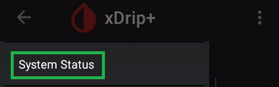
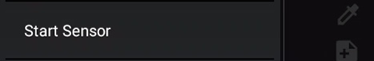
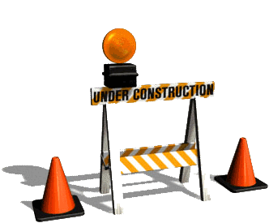

Start sensor
Make sure you have xDrip+ setup correctly: see G5 G6.
Use only one device
If you have a receiver or normally use the vendor app, it's now time to decide which device you will want to use to start and stop your sensors. Use only one and make sure the other devices are either turned off or stored in a shielding bag (or a microwave oven turned OFF). When starting a sensor, do not let the receiver interact before warm-up is complete and you have readings in xDrip+.
At this point make sure you have a sensor inserted (already started or a new one) with the transmitter attached.
Check connection
Menu / System Status


Once on this page swipe leftwards to display G5/G6 Status

Stop the old sensor if necessary
Before starting a new sensor, the previous one should be stopped.
Open the menu and check it proposes Start sensor

New sensor
